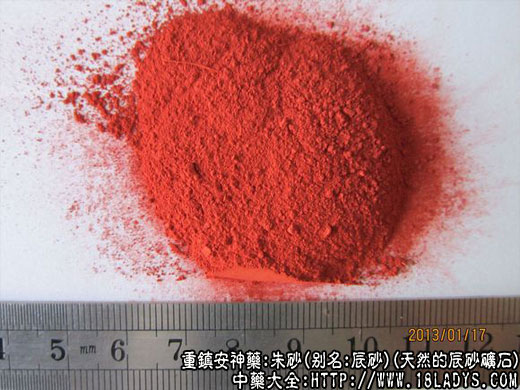

本品为常用中药。始载《神农本草经》，列为上品。原名“丹砂”。
别名：辰砂、朱宝砂。
来源：为天然的辰砂矿石（天然硫化汞矿石）。
产地：主产于贵州铜仁，四川酉阳、秀山、湖南晃县、广西金城江等地区。
性状鉴别：因矿石的形状不同，商品有豆砂、片砂和朱砂三种。
豆砂：呈大小不等的块状，形如豆瓣，亦有呈六角棱块状者。鲜红色和紫红色。有光泽，半透明。外表面多带有因相互磨擦产生的细粉末，手触之稍染手。体重，易砸碎或层层刻裂。新断面平滑明亮晶莹夺目。气无，味淡。
片砂：呈不规则的薄片状，厚约1毫米，长宽约0.5～1.5厘米。余与上同。
片砂：呈粉末状或细小颗粒状，微有光泽。余与上同。
均以色红鲜艳，不含白岩者为佳。
主要成分：含硫化汞和微量硒和锌。
药理作用：安神、定惊、解毒、其原理为镇静、抗菌。
炮制：用吸铁石吸净铁质，研磨成细粉。
性味：甘、微寒。
归经：入心经。
功能：镇静、安神、定惊、解毒。
主治：心神不宁、惊痫癫狂、失眠多梦、痈肿疮毒、疥癣等症。
临床应用：
（1）用于镇静、安定、治惊痫、尤其小儿急慢惊风，常以朱砂配竺黄精、天南星、咸竹蜂等药，方如朱砂定惊方。
对一般心虚而致心神不宁、时有惊悸、怔仲、遗精的患者（可见于神经衰弱），可用生猪心一个，剖开，加朱砂约0.9g于内，炖2小时候，猪心和朱砂一起服。又可配当归、生地、酸枣仁、茯神等。症稍重者，可在生脉散基础上加用朱茯神15～18g，对止惊悸和心动过速有较好效果。
（2）用于清泻肺热。治风痰眩晕，取其微寒而能清热，尤适宜于肺热吐血，常配蛤粉同用。
（3）用于解毒。治咽喉部肿痛发炎，以朱砂末配冰片末吹喉。又外用治毒蛇咬伤，可用朱砂调水局部涂敷。
附：
（1）本品一般不作煎剂，不宜用火炮制，以免释出汞引起中毒。
（2）茯神、灯芯草等药可用朱砂拌制（即朱茯神、朱灯芯草），以加强镇静安神作用。
用量：0.3～1.8g，通常作丸散剂服，如配合煎剂，则研细另包，以汤药送服。
处方举例：朱砂定惊方：朱砂0.45g（冲），竺黄精6g，胆南星1.5g，咸竹蜂6g，炙甘草3g，水煎服。
注：
（1）贵州和四川产品颜色鲜红品质较好，广西产品颜色紫青而暗品质较差。
（2）辰砂在零售单位是朱砂的别名，但在批发部门则是平口砂的别名。